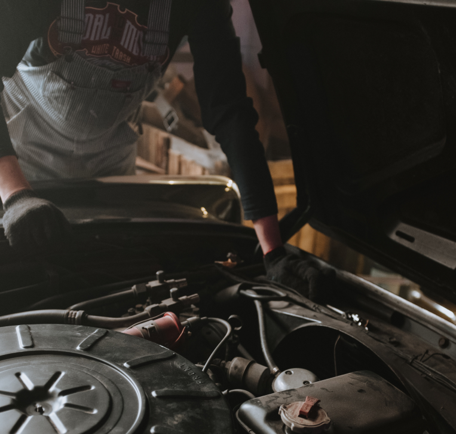

Кузовной ремонт Cherry в Санкт-Петербурге
Наш автосервис проводит кузовной ремонт автомобиля Cherry в Санкт-Петербурге. В современном автоматизированном мире, почти все сталкиваются с проблемой выбора автомастерской для ремонта автомобиля. Важно выбрать мастерскую, которая обеспечит качественный ремонт и окрашивание. Сразу встает вопрос отношения цены и качества.
Особо важно сделать правильный выбор, чтобы не усугубить проблему, выбрав автосервис с неквалифицированными специалистами, которые предоставят услугу низкого качества, после чего потребуется еще один ремонт.
В Санкт-Петербурге качественный кузовной ремонт Cherry представляет компания Дельта-Сервис. Наши мастера справятся с любыми задачами. В команду входят высококвалифицированные мастера с большим опытом работы в данной сфере. Наша мастерская проводит полную окрашивание кузова или его элементов, используя оборудование отвечающее современным требованиям и проверенные материалы.
При покраске отдельных элементов применяется компьютерный подбор краски к имеющейся на автомобиле. Цена будет заметно маленькой.

Бывают случаи когда окрашивание отдельных элементов не скроет все дефекты, в таком случае поможет полная покраска кузова. Это очень сложный этап работы, который наш автосервис предоставляет в полном объеме.
Где отремонтировать кузов?
Даже небольшие деформации кузова, сколы и царапины требуют ремонта. Лакокрасочное покрытие вблизи поврежденных участков продолжает разрушаться, подвергается коррозии.
Это нарушает кузовной конструкции, снижению ее прочности. Рекомендуем вам найти кузовной ремонт Cherry даже если речь идет о царапине незначительной глубины.
Своевременное решение проблем с повреждением лакокрасочного покрытия, устранение видимых и скрытых повреждений позволит предотвратить их усугубление и сэкономить значительную сумму денег на восстановление кузова.
При каких обстоятельствах нужно обратиться к нам?
- Царапины и вмятины после неблагополучной парковки
- Воздействие щебня или града
- Аварии
- Проявление заводских «недоработок»
- Появление ржавчины и коррозии
Отремонтировать кузов в СПб выгодно именно у нас:
Ремонт кузова производится быстро и качественно, возможен срочный ремонт.
Мы делаем работу профессионально, применяем оборудование, собранное и прошедшее тестирование на ведущих заводах зарубежья. К клиенту и его автомобилю подход индивидуален в зависимости от пожеланий и предпочтений.
Стоимость рассчитывается лояльно: приятные цены, одни из самых низких в Петербурге.
Какие услуги мы предлагаем:
-
Восстановление геометрии кузова. Проводим выравнивание основных элементов и убираем перекосы.
-
Сварка. Проводится, если участок кузова поврежден пробоиной, ржавчиной или коррозией. Применяем новейшие технологии ремонта.
-
Рихтовка. Ей подвергаются участки кузова, под влиянием вогнутостей и выпуклостей. Может реализовываться как на маленьком сегменте, так и на всей площади кузова.
-
Покраска. Восстановление защитного ЛКП (лако-красочного покрытия) - это обработка специальным раствором, после окрашивания которым машина становится снова в потрясающем первоначальном виде.
Хочу записаться